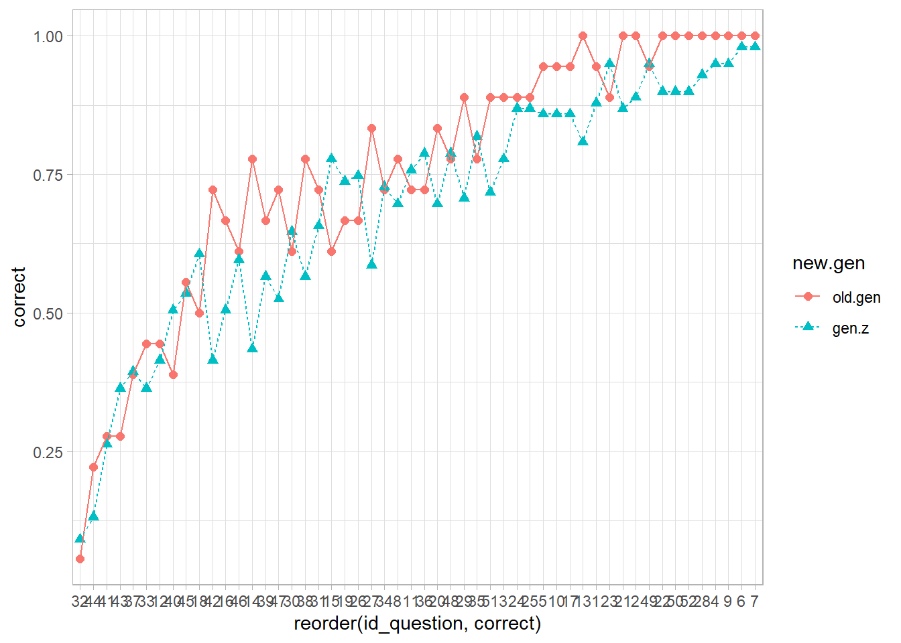
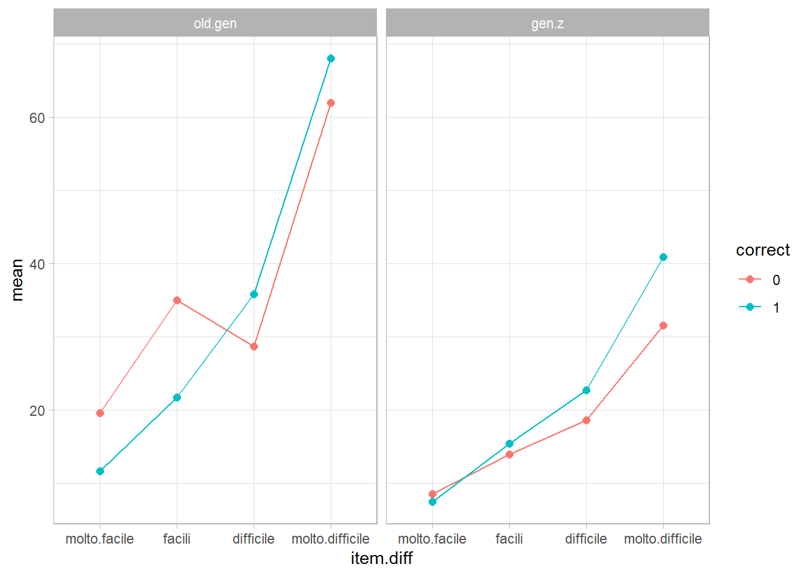

| gen | n | prop |
|---|---|---|
| boomer | 6 | 0.0512821 |
| gen.x | 6 | 0.0512821 |
| gen.y | 6 | 0.0512821 |
| gen.z | 99 | 0.8461538 |
matriKS Dati Adulti
Introduzione
In questo file si trova un primo report sui dati degli adulti che hanno compilato matriks. Il file usato il 2023-03-28 è mat50_2023_03_26.csv. SOno presenti le orsservazioni su 117 soggetti.
Ho ricodificato le età sulla base delle generazioni:
- \(\leq 1946\): Generazione silenziosa (1928-1945)
- Baby boomers o “Boomers” (1946-1964)
- Generazione X (1965-1980)
- Generazione Y o “Millennials” (1981-1996)
- Generazione Z o “Centennials” (1997-2012)
- Generazione Alpha o “Screenagers” (2013-oggi)
Data la situazione PER IL MOMENTO, collasso insieme boomer, gen.x e gen.y:
| new.gen | n | prop |
|---|---|---|
| gen.z | 99 | 0.8461538 |
| old.gen | 18 | 0.1538462 |
Gli anni scolastici delle persone sono stati ricategorizzati in 3 livelli ricodificati come segue:
| anni_scolarita | scol |
|---|---|
| 5 | primaria |
| 6 | primaria |
| 3 | primaria |
| 7 | primaria |
| 8 | primaria |
| 11 | secondaria |
| 13 | secondaria |
| 9 | secondaria |
| 10 | secondaria |
| 19 | superiore |
| 17 | superiore |
| 16 | superiore |
| 15 | superiore |
| 18 | superiore |
Scolarità:
| scol | n | prop |
|---|---|---|
| primaria | 47 | 0.4017094 |
| secondaria | 56 | 0.4786325 |
| superiore | 14 | 0.1196581 |
Genere:
| gender | n | prop |
|---|---|---|
| F | 60 | 0.5128205 |
| M | 57 | 0.4871795 |
Diagnosi:
| new.diag | n | prop |
|---|---|---|
| DSA | 3 | 0.025641 |
| altro | 1 | 0.008547 |
| ok | 113 | 0.965812 |
Genere per scolarità:
| scol | gender | n | prop |
|---|---|---|---|
| primaria | F | 21 | 0.1794872 |
| primaria | M | 26 | 0.2222222 |
| secondaria | F | 31 | 0.2649573 |
| secondaria | M | 25 | 0.2136752 |
| superiore | F | 8 | 0.0683761 |
| superiore | M | 6 | 0.0512821 |
Genere ed età
| new.gen | gender | n | prop |
|---|---|---|---|
| gen.z | F | 51 | 0.4358974 |
| gen.z | M | 48 | 0.4102564 |
| old.gen | F | 9 | 0.0769231 |
| old.gen | M | 9 | 0.0769231 |
Soggetti
In questa sezione sono riportate le statistiche descrittive relative ai soggetti.
Singoli soggetti
Soggetti aggregati
Tempi di risposta
Sull’asse delle x sono riportati i soggetti ordinati secondo il loro total score (dal più basso al più alto), sull’asse delle y sono riportati i tempi di risposta di ogni soggetto. A livello puramente descrittivo ho riportato anche il genere delle persone.
Per cercare di avere qualche insight in più, ho suddiviso i soggetti secondo la distribuzione quartilica del loro total score:
- \(\leq Q1\) : Pessimi
- \(Q1 < x \leq Q2\): scarsi
- \(Q2 < x \leq Q3\): bravi
- \(> Q3\): top
Che riuslta in:
| ab.sbj | n | prop |
|---|---|---|
| pessimi | 30 | 0.2564103 |
| scarsi | 30 | 0.2564103 |
| bravi | 32 | 0.2735043 |
| top | 25 | 0.2136752 |
relativamete al genere:
| ab.sbj | gender | n | prop |
|---|---|---|---|
| pessimi | F | 17 | 0.1452991 |
| pessimi | M | 13 | 0.1111111 |
| scarsi | F | 19 | 0.1623932 |
| scarsi | M | 11 | 0.0940171 |
| bravi | F | 13 | 0.1111111 |
| bravi | M | 19 | 0.1623932 |
| top | F | 11 | 0.0940171 |
| top | M | 14 | 0.1196581 |
Come si distribuiscono le diverse scolarità nei livelli di bravura
E nelle età (generazione):


Item
In questa sezione sono riportati i risultati relativi all’item probability
Item ordinati dal più difficile al più facile sull’asse delle y, item probability sull’asse delle x.
Item ordinati dal più difficile al più facile sull’asse delle x, tempo per ogni item sull’asse delle y.

Analisi sui quartili degli item
Per cercare di capire un po’ meglio come funziona la relazione tra la difficoltà degli item e i loro tempi di risposta, divido gli item secondo la distribuzione quartilica della loro item probability:
- \(\leq Q1\) : Molto difficili
- \(Q1 < x \leq Q2\): Difficili
- \(Q2 < x \leq Q3\): Facili
- \(> Q3\): Molto facili
Che risulta in:
| item.diff | n |
|---|---|
| difficile | 13 |
| facili | 13 |
| molto.difficile | 13 |
| molto.facile | 13 |
A livello generale si ha questa situazione ripsetto ai tempi di risposta:
Anche interpretabile così:
Differenza tempi di risposta
Calcolo la differenza nei tempi di risposta tra i livelli estremi delle generazioni, ossia (per il momento tra old.gen e gen.z). La differenza è calcolata tra old gen e gen z, per cu valori positivi indicano che old generation è più lenta della gen.z
Tempi di risposta corrette vs. errate

Distrattori
Considerando l’età
Differenza tempi di risposta
Calcolo la differenza nei tempi di risposta tra i livelli estremi della scolairtà (i.e., superiore-primaria).
Tempi di risposta corrette vs. errate (Scolairtà)
Tempi di risposta corrette vs. errate (Età - generazione)

Distrattori
Considerando la scolarità

Considerando la scolarità